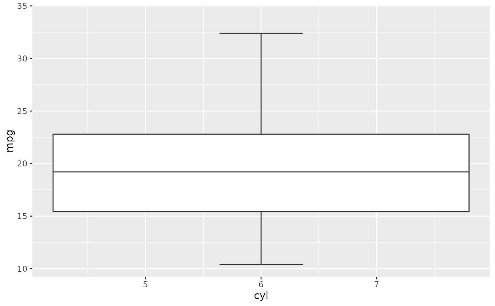

Create a boxplot from a data frame
Usage
sn_plot_boxplot(data, x, y, sort = FALSE)
Arguments
- data
A data frame.
- x, y
Columns mapped to the x- and y-axes.
- sort
Currently reserved for future sorting support.
Examples
sn_plot_boxplot(mtcars, x = cyl, y = mpg)
#> Warning: Orientation is not uniquely specified when both the x and y aesthetics are
#> continuous. Picking default orientation 'x'.
#> Warning: Continuous x aesthetic
#> ℹ did you forget `aes(group = ...)`?
